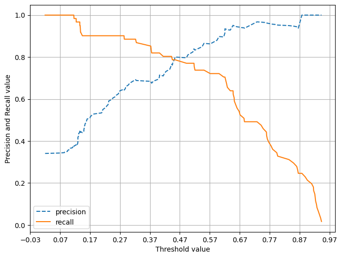

Code
import sklearn
print(sklearn.__version__)1.4.2import numpy as np
from sklearn.base import BaseEstimator
class MyDummyClassifier(BaseEstimator):
# fit()은 아무것도 학습하지 않음.
def fit(self, X, y=None):
pass
# predict()는 아무 단순하게 Sex feature가 1->0, 그렇지 않으면 1로 예측
def predict(self, X):
pred = np.zeros((X.shape[0], 1))
for i in range(X.shape[0]):
if X['Sex'].iloc[i] == 1:
pred[i] = 0
else:
pred[i] = 1
return predfrom sklearn.preprocessing import LabelEncoder
# Null 처리 함수
def fillna(df):
df['Age'] = df['Age'].fillna(df['Age'].mean())
df['Cabin'] = df['Cabin'].fillna('N')
df['Embarked'] = df['Embarked'].fillna('N')
df['Fare'] = df['Fare'].fillna(0)
return df
# 머신러닝 알고리즘에 불필요한 피처 제거
def drop_features(df):
df.drop(['PassengerId', 'Name', 'Ticket'], axis=1, inplace=True)
return df
# 레이블 인코딩 수행
def format_features(df):
df['Cabin'] = df['Cabin'].str[:1]
features = ['Cabin', 'Sex', 'Embarked']
for feature in features:
le = LabelEncoder()
le = le.fit(df[feature])
df[feature] = le.transform(df[feature])
return df
# 앞에서 설정한 데이터 전처리 함수 호출
def transform_features(df):
df = fillna(df)
df = drop_features(df)
df = format_features(df)
return dfimport pandas as pd
from sklearn.model_selection import train_test_split
from sklearn.metrics import accuracy_score
titanic_df = pd.read_csv(r"C:\Users\HOME\Downloads\archive\Titanic-Dataset.csv")
y_titanic_df = titanic_df['Survived']
X_titanic_df = titanic_df.drop('Survived', axis=1)
X_titanic_df = transform_features(X_titanic_df)
X_train, X_test, y_train, y_test = train_test_split(X_titanic_df, y_titanic_df, test_size=0.2)
myclf = MyDummyClassifier()
myclf.fit(X_train, y_train)
mypredictions = myclf.predict(X_test)
print("myDummy의 정확도는: {0:.4f}".format(accuracy_score(y_test, mypredictions)))myDummy의 정확도는: 0.8268from sklearn.datasets import load_digits
from sklearn.model_selection import train_test_split
from sklearn.base import BaseEstimator
from sklearn.metrics import accuracy_score
import numpy as np
import pandas as pd
class MyFakeClassifier(BaseEstimator):
def fit(self, X, y):
pass
# 입력값으로 들어오는 X데이터 셋의 크기만큼 모두 0으로 만들어 반환
def predict(self, X):
return np.zeros((len(X), 1), dtype=bool)
# 사이킷런의 내장 데이터셋을 이용해 MNIST 데이터 로딩
digits = load_digits()
print(digits.data)
print("데이터 shape: ", digits.data.shape)
print(digits.target)
print("데이터 타겟 shape: ", digits.target.shape)[[ 0. 0. 5. ... 0. 0. 0.]
[ 0. 0. 0. ... 10. 0. 0.]
[ 0. 0. 0. ... 16. 9. 0.]
...
[ 0. 0. 1. ... 6. 0. 0.]
[ 0. 0. 2. ... 12. 0. 0.]
[ 0. 0. 10. ... 12. 1. 0.]]
데이터 shape: (1797, 64)
[0 1 2 ... 8 9 8]
데이터 타겟 shape: (1797,)(450,)
0과 1의 분포도
0 409
1 41
Name: count, dtype: int64
0.9088888888888889정밀도: 0.0
재현율: 0.0# 오차행렬, 정확도, 정밀도, 재현율 한 번에 계산하는 함수
from sklearn.metrics import accuracy_score, confusion_matrix, precision_score, recall_score
def get_clf_eval(y_test, pred):
confusion = confusion_matrix(y_test, pred)
accuracy = accuracy_score(y_test, pred)
precision = precision_score(y_test, pred)
recall = recall_score(y_test, pred)
print('오차행렬')
print(confusion)
print('정확도: {0:.4f}, 정밀도: {1:.4f}, 재현율: {2:.4f}'.format(accuracy, precision, recall))import numpy as np
import pandas as pd
from sklearn.model_selection import train_test_split
from sklearn.linear_model import LogisticRegression
titanic_df = pd.read_csv(r"C:\Users\HOME\Downloads\archive\Titanic-Dataset.csv")
y_titanic_df = titanic_df['Survived']
X_titanic_df= titanic_df.drop('Survived', axis=1)
X_titanic_df = transform_features(X_titanic_df)
X_train, X_test, y_train, y_test = train_test_split(X_titanic_df, y_titanic_df, \
test_size=0.20, random_state=11)
lr_clf = LogisticRegression(solver='liblinear')
lr_clf.fit(X_train , y_train)
pred = lr_clf.predict(X_test)
get_clf_eval(y_test , pred)오차행렬
[[108 10]
[ 14 47]]
정확도: 0.8659, 정밀도: 0.8246, 재현율: 0.7705# predict_proba() 메서드 확인
pred_proba = lr_clf.predict_proba(X_test)
pred = lr_clf.predict(X_test)
print(pred_proba.shape)
print('pred_proba array에서 앞 3개만 샘플로 추출 \n:', pred_proba[:3])
# 예측 확률 array 와 예측 결과값 array 를 concatenate 하여 예측 확률과 결과값을 한눈에 확인
pred_proba_result = np.concatenate([pred_proba , pred.reshape(-1,1)],axis=1)
print('두개의 class 중에서 더 큰 확률을 클래스 값으로 예측 \n',pred_proba_result[:3])(179, 2)
pred_proba array에서 앞 3개만 샘플로 추출
: [[0.44935228 0.55064772]
[0.86335513 0.13664487]
[0.86429645 0.13570355]]
두개의 class 중에서 더 큰 확률을 클래스 값으로 예측
[[0.44935228 0.55064772 1. ]
[0.86335513 0.13664487 0. ]
[0.86429645 0.13570355 0. ]][[0. 0. 1.]
[1. 0. 0.]
[0. 0. 1.]]오차행렬
[[108 10]
[ 14 47]]
정확도: 0.8659, 정밀도: 0.8246, 재현율: 0.7705오차행렬
[[97 21]
[11 50]]
정확도: 0.8212, 정밀도: 0.7042, 재현율: 0.8197# 임계값을 변경해보기
thresholds = [0.4, 0.45, 0.50, 0.55, 0.60]
def get_eval_by_threshold(y_test, pred_proba_c1, thresholds):
for custom_threshold in thresholds:
binarizer = Binarizer(threshold=custom_threshold).fit(pred_proba_c1)
custom_predict = binarizer.transform(pred_proba_c1)
print("입곗값: ", custom_threshold)
get_clf_eval(y_test, custom_predict)
get_eval_by_threshold(y_test, pred_proba[:, 1].reshape(-1,1), thresholds)입곗값: 0.4
오차행렬
[[97 21]
[11 50]]
정확도: 0.8212, 정밀도: 0.7042, 재현율: 0.8197
입곗값: 0.45
오차행렬
[[105 13]
[ 13 48]]
정확도: 0.8547, 정밀도: 0.7869, 재현율: 0.7869
입곗값: 0.5
오차행렬
[[108 10]
[ 14 47]]
정확도: 0.8659, 정밀도: 0.8246, 재현율: 0.7705
입곗값: 0.55
오차행렬
[[111 7]
[ 16 45]]
정확도: 0.8715, 정밀도: 0.8654, 재현율: 0.7377
입곗값: 0.6
오차행렬
[[113 5]
[ 17 44]]
정확도: 0.8771, 정밀도: 0.8980, 재현율: 0.7213from sklearn.metrics import precision_recall_curve
# 레이블 값이 1일 때의 예측 확률
pred_proba_class1 = lr_clf.predict_proba(X_test)[:,1]
# 실제값 = 레이블 값 = 1일 때의 예측 확률을 precision_recall_curve 인자로 입력
precisions, recalls, threholds = precision_recall_curve(y_test, pred_proba_class1)
print('임곗값 배열의 Shape: ', thresholds.shape)
print('반환된 precisions 배열의 Shape:', precisions.shape)
print('반환된 recalls 배열의 Shape:', recalls.shape)
#반환된 임계값 배열 로우가 147건이므로 샘플로 10건만 추출하되, 임곗값을 15 Step으로 추출.
thr_index = np.arange(0, thresholds.shape[0], 15)
print('샘플 추출을 위한 임계값 배열의 index 10개:', thr_index)
print('샘플용 10개의 임곗값: ', np.round(thresholds[thr_index], 2))
# 15 step 단위로 추출된 임계값에 따른 정밀도와 재현율 값
print('샘플 임계값별 정밀도: ', np.round(precisions[thr_index], 3))
print('샘플 임계값별 재현율: ', np.round(recalls[thr_index], 3))--------------------------------------------------------------------------- AttributeError Traceback (most recent call last) Cell In[47], line 8 6 # 실제값 = 레이블 값 = 1일 때의 예측 확률을 precision_recall_curve 인자로 입력 7 precisions, recalls, threholds = precision_recall_curve(y_test, pred_proba_class1) ----> 8 print('임곗값 배열의 Shape: ', thresholds.shape) 9 print('반환된 precisions 배열의 Shape:', precisions.shape) 10 print('반환된 recalls 배열의 Shape:', recalls.shape) AttributeError: 'list' object has no attribute 'shape'
import matplotlib.pyplot as plt
import matplotlib.ticker as ticker
%matplotlib inline
def precision_recall_curve_plot(y_test , pred_proba_c1):
# threshold ndarray와 이 threshold에 따른 정밀도, 재현율 ndarray 추출.
precisions, recalls, thresholds = precision_recall_curve( y_test, pred_proba_c1)
# X축을 threshold값으로, Y축은 정밀도, 재현율 값으로 각각 Plot 수행. 정밀도는 점선으로 표시
plt.figure(figsize=(8,6))
threshold_boundary = thresholds.shape[0]
plt.plot(thresholds, precisions[0:threshold_boundary], linestyle='--', label='precision')
plt.plot(thresholds, recalls[0:threshold_boundary],label='recall')
# threshold 값 X 축의 Scale을 0.1 단위로 변경
start, end = plt.xlim()
plt.xticks(np.round(np.arange(start, end, 0.1),2))
# x축, y축 label과 legend, 그리고 grid 설정
plt.xlabel('Threshold value'); plt.ylabel('Precision and Recall value')
plt.legend(); plt.grid()
plt.show()
precision_recall_curve_plot( y_test, lr_clf.predict_proba(X_test)[:, 1] )
F! 스코어: 0.7966# 임곗값에 따라 f1score 측정
def get_clf_eval(y_test , pred):
confusion = confusion_matrix( y_test, pred)
accuracy = accuracy_score(y_test , pred)
precision = precision_score(y_test , pred)
recall = recall_score(y_test , pred)
# F1 스코어 추가
f1 = f1_score(y_test,pred)
print('오차 행렬')
print(confusion)
# f1 score print 추가
print('정확도: {0:.4f}, 정밀도: {1:.4f}, 재현율: {2:.4f}, F1:{3:.4f}'.format(accuracy, precision, recall, f1))
thresholds = [0.4 , 0.45 , 0.50 , 0.55 , 0.60]
pred_proba = lr_clf.predict_proba(X_test)
get_eval_by_threshold(y_test, pred_proba[:,1].reshape(-1,1), thresholds)입곗값: 0.4
오차 행렬
[[97 21]
[11 50]]
정확도: 0.8212, 정밀도: 0.7042, 재현율: 0.8197, F1:0.7576
입곗값: 0.45
오차 행렬
[[105 13]
[ 13 48]]
정확도: 0.8547, 정밀도: 0.7869, 재현율: 0.7869, F1:0.7869
입곗값: 0.5
오차 행렬
[[108 10]
[ 14 47]]
정확도: 0.8659, 정밀도: 0.8246, 재현율: 0.7705, F1:0.7966
입곗값: 0.55
오차 행렬
[[111 7]
[ 16 45]]
정확도: 0.8715, 정밀도: 0.8654, 재현율: 0.7377, F1:0.7965
입곗값: 0.6
오차 행렬
[[113 5]
[ 17 44]]
정확도: 0.8771, 정밀도: 0.8980, 재현율: 0.7213, F1:0.8000